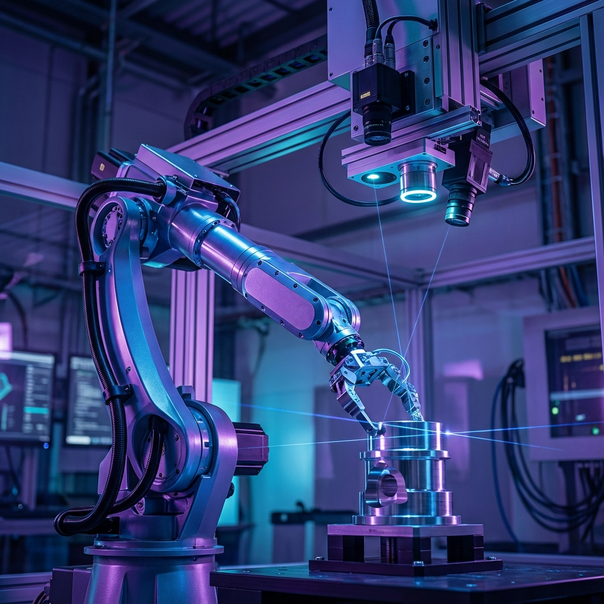
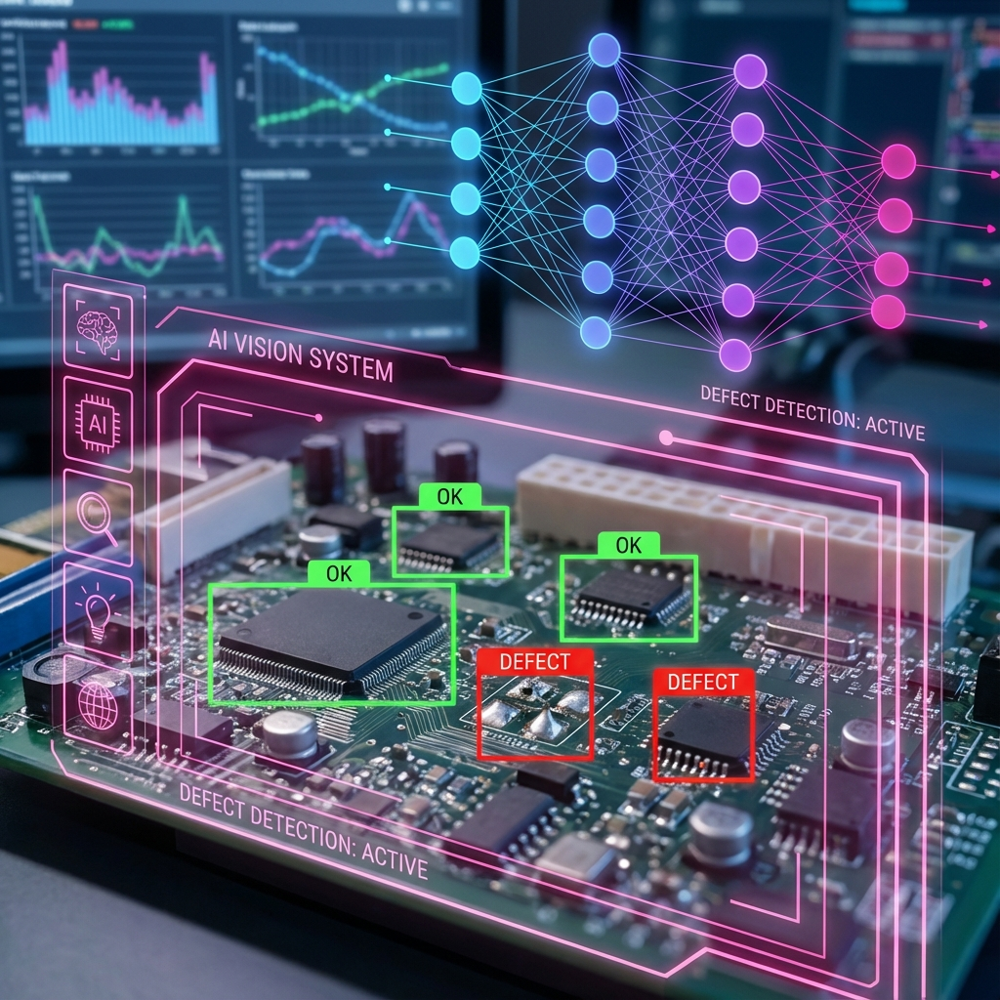
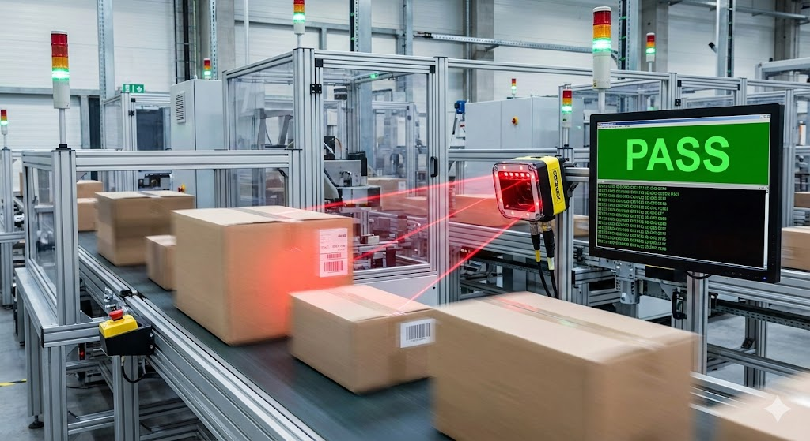

Alignment · Cognex VisionPro
초정밀 비전 정렬 검사
디스플레이, 반도체, 전자부품 공정에서 코그넥스 VisionPro와 PatMax 패턴 매칭을 적용해 위치 보정, 치수검사, 로봇 좌표 보정을 수행합니다.
패턴 매칭, 좌표 보정, 로봇 가이드, 조명 조건까지 함께 검토한 정렬 검사 사례입니다.
Case Studies
ASPEC은 AI 비전검사, OCR검사, 바코드 판독, 정렬 검사, 로봇비전으로 실제 제조 현장의 검사 문제를 해결합니다. 장비 선정과 기존 설비 연동도 현장 조건에 맞춰 함께 검토합니다.

Alignment · Cognex VisionPro
디스플레이, 반도체, 전자부품 공정에서 코그넥스 VisionPro와 PatMax 패턴 매칭을 적용해 위치 보정, 치수검사, 로봇 좌표 보정을 수행합니다.
패턴 매칭, 좌표 보정, 로봇 가이드, 조명 조건까지 함께 검토한 정렬 검사 사례입니다.

AI Inspection · Deep Learning
스크래치, 찍힘, 얼룩, 오염, 이물, 누락처럼 규칙 정의가 어려운 불량을 ai비전검사와 딥러닝 외관검사로 분류하고 작업자 판정 편차를 줄입니다.
불량 형태가 일정하지 않은 제품에 딥러닝 판정을 적용한 외관검사 사례입니다.

OCR · OCV · Label Inspection
유통기한, 제조일자, LOT 번호, 라벨 인쇄, 각인 문자를 OCR검사와 OCV검사로 판독해 오인쇄, 누락, 흐림, 위치 틀어짐을 검사합니다.
문자 판독과 인쇄 검증을 함께 적용해 포장 품질을 안정화한 사례입니다.

Barcode · DataMan · Traceability
코그넥스 DataMan 바코드리더기, QR코드 리더기, DPM 판독 시스템을 적용해 고속 컨베이어와 다면 판독 환경에서 제품 추적성을 확보합니다.
바코드 판독 결과를 생산 이력과 연결해 추적성을 확보한 사례입니다.
ASPEC Blog
코그넥스 비전검사, AI 외관검사, OCR검사, 바코드리더기, 머신비전 조명·케이블 선정, PLC·MES 연동처럼 실제 현장에서 진행한 머신비전 구축 사례와 기술 메모를 ASPEC 네이버 블로그에 정리하고 있습니다.
제약·의료기기: OCR검사, 바코드리더기, 라벨 검사, UDI 추적
자동차 부품: AI 외관검사, 조립검사, 유무검사, 치수검사
전자·반도체: 정렬 검사, 위치 보정, 로봇비전, 2D·3D 검사
식품·화장품: 유통기한 OCR검사, 포장 인쇄 검사, QR코드 판독